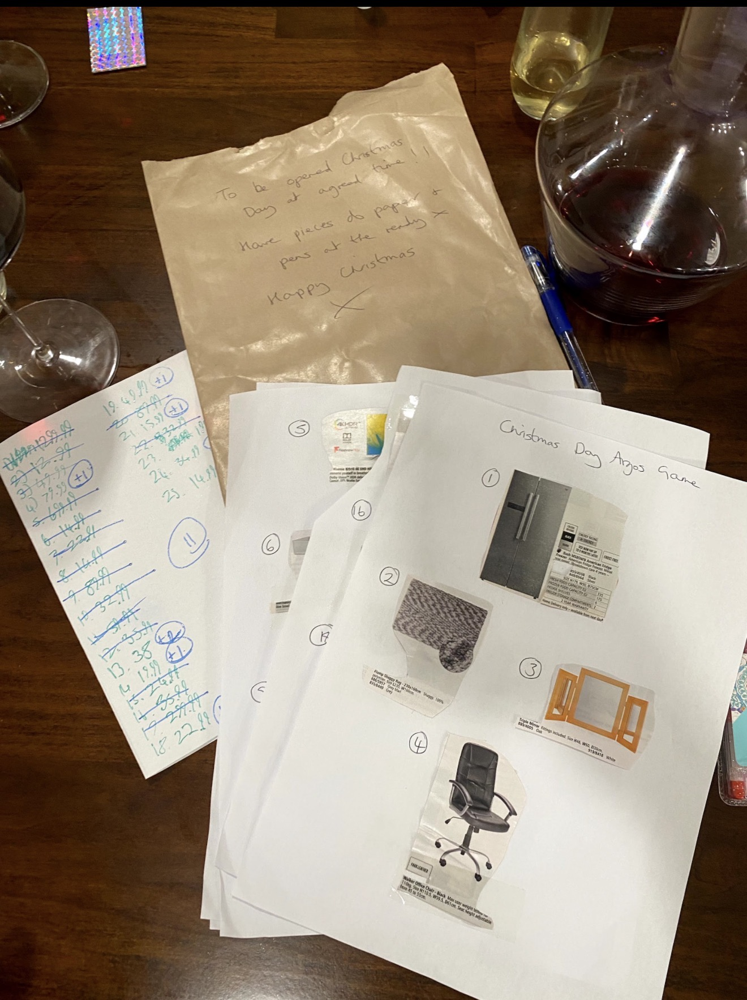

A CHRISTMAS EXPERIMENT / 2026 THE GAMEAI / FAMILY / MAKING THINGS
A family guessing game born from the Argos catalogue. Three countries, a Christmas deadline, and an experiment in using AI to build something that brings people together.
DISCOVER THE PROJECT